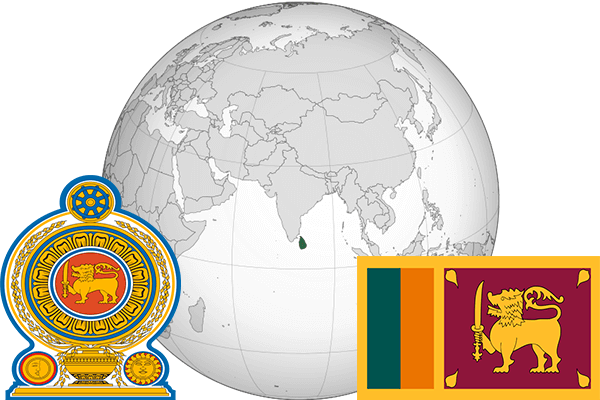

To`liq nomi: Shri Lanka Demokratik Sotsialistik Respublikasi
Region: Hind okeani
Qonunchilik shakli: Respublika
Mustaqillik kuni: 4 fevral 1948-yil
Poytaxt: Shri-Jayavardenapura Kotte
Maydoni: 65,610 km²
Chegaradosh davlatlari: Yo’q
Aholisi: 21,444,000 (2017-yil)
Aholi zichligi: 327/km2
Aholining o`rtacha yoshi: 74,94 yil
Rasmiy tili: Singal va Tamil tillari
Dini: Buddizm
Pul birligi: Shri Lanka rupisi
Telefon prefiksi: +94
Internet domen: .lk
Xalqaro tashkilotlarga a`zoligi: BMT
Dengiz va okeanlarga chiqishi: Hind okeani
YIM: Butun: $ 82,2 mlrd (2016-yil)
Yirik shaharlari: Shri-Jayavardenapura Kotte, Kolombo